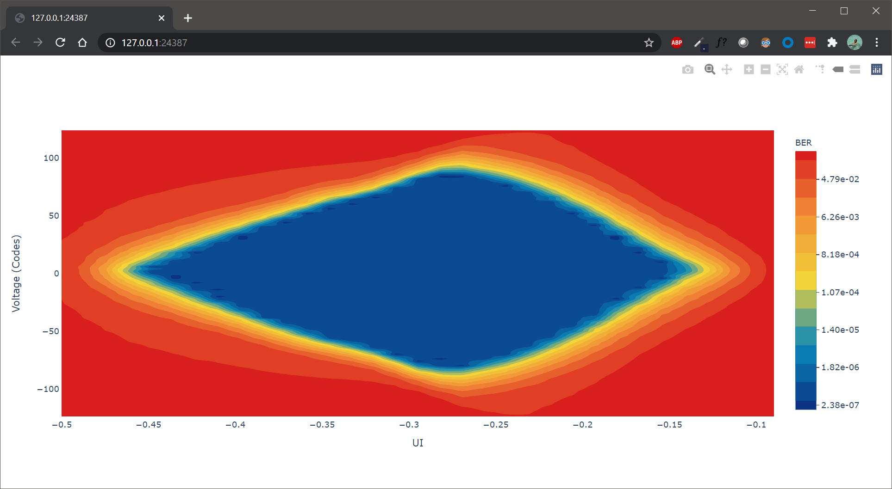

Eye Scan¶
A 2D statistically eye scan helps us perform margin analysis on the channel over which the RX is receiving data.
Create eye scan¶
Eye scans can be created using RX or Link.
To create an eye scan, use the factory function create_eye_scans().
Here’s an example of creating eye scan for
RX’s
"""
Other imports
"""
from more_itertools import one
from chipscopy.api.ibert import create_eye_scans
"""
Boilerplate stuff - Create a session, get the IBERT core etc etc
"""
quad_204 = one(ibert.gt_groups.filter_by(name="Quad_204"))
ch_0 = one(quad_204.gts.filter_by(name="CH_0"))
ch_1 = one(quad_204.gts.filter_by(name="CH_1"))
ch_2 = one(quad_204.gts.filter_by(name="CH_2"))
ch_3 = one(quad_204.gts.filter_by(name="CH_3"))
# Creating eye scan for a single RX
eye_scan_0 = one(create_eye_scans(target_objs=ch_0.rx))
# OR
# Creating eye scan for multiple RX's in one shot
new_eye_scans = create_eye_scans(target_objs=[ch_1.rx, ch_2.rx, ch_3.rx])
Link’s
"""
Other imports
"""
from more_itertools import one
from chipscopy.api.ibert import create_links, create_eye_scans
"""
Boilerplate stuff - Create a session, get the IBERT core etc etc
"""
quad_204 = one(ibert.gt_groups.filter_by(name="Quad_204"))
ch_0 = one(quad_204.gts.filter_by(name="CH_0"))
ch_1 = one(quad_204.gts.filter_by(name="CH_1"))
ch_2 = one(quad_204.gts.filter_by(name="CH_2"))
ch_3 = one(quad_204.gts.filter_by(name="CH_3"))
# Create links
link_0 = one(create_links(rxs=ch_0.rx, txs=ch_0.tx))
remaining_3_links = create_links(rxs=[ch_1.rx, ch_2.rx, ch_3.rx], txs=[ch_1.tx, ch_2.tx, ch_3.tx])
# Creating eye scan for a single link
eye_scan_1 = one(create_eye_scans(target_objs=link_0))
# OR
# Creating eye scan for multiple link's in one shot
new_eye_scans = create_eye_scans(target_objs=remaining_3_links)
If desired, you can access the eye scans(post creation) using the eye_scan property in
the RX or Link class instance.
scan_0 = ch_0.rx.eye_scan
scan_1 = link_0.eye_scan
Get/Set eye scan parameters¶
The parameters to run the eye scan are accessible via the params property in the EyeScan class
instance.
Each individual param stored in the params attribute is an instance of the EyeScanParam class.
for param in eye_scan_0.params.values():
print(param)
>>> EyeScanParam(name='Horizontal Step', modifiable=True, valid_values=[1, 2, 3, 4, 5, 6, 7, 8, 9, 10, 11, 12, 13, 14, 15, 16], default_value=8)
EyeScanParam(name='Vertical Step', modifiable=True, valid_values=[1, 2, 3, 4, 5, 6, 7, 8, 9, 10, 11, 12, 13, 14, 15, 16], default_value=8)
EyeScanParam(name='Horizontal Range', modifiable=True, valid_values=['-0.500 UI to 0.500 UI', '-0.400 UI to 0.400 UI', '-0.300 UI to 0.300 UI', '-0.200 UI to 0.200 UI', '-0.100 UI to 0.100 UI'], default_value='-0.500 UI to 0.500 UI')
EyeScanParam(name='Vertical Range', modifiable=True, valid_values=['100%', '90%', '80%', '70%', '60%', '50%', '40%', '30%', '20%', '10%'], default_value='100%')
EyeScanParam(name='Target BER', modifiable=True, valid_values=[1e-05, 1e-06, 1e-07, 1e-08, 1e-09, 1e-10, 1e-11, 1e-12, 1e-13, 1e-14, 1e-15, 1e-16, 1e-17, 1e-18, 1e-19], default_value=1e-05)
EyeScanParam(name='Dwell Time', modifiable=True, valid_values=[0, 1, 2, 3, 4, 5, 6, 7, 8, 9, 10, 11, 12, 13, 14, 15, 16, 17, 18, 19, 20, 21, 22, 23, 24, 25, 26, 27, 28, 29, 30, 31, 32, 33, 34, 35, 36, 37, 38, 39, 40, 41, 42, 43, 44, 45, 46, 47, 48, 49, 50, 51, 52, 53, 54, 55, 56, 57, 58, 59, 60], default_value=0)
To change the value of any parameter that is available in params, you should set the value attribute of the
EyeScanParam class instance.
For convenience, aliases have been provided so that the user doesn’t need to remember/hard code strings for the eye scan parameter names in their scripts. Users can import these aliases as needed in their scripts. Please refer to Aliases for eye scan params for currently available eye scan parameter aliases. For example
eye_scan_0.params[EYE_SCAN_HORZ_STEP].value = 8
eye_scan_0.params[EYE_SCAN_VERT_STEP].value = 8
eye_scan_0.params[EYE_SCAN_HORZ_RANGE].value = "-0.500 UI to 0.500 UI"
eye_scan_0.params[EYE_SCAN_VERT_RANGE].value = "100%"
eye_scan_0.params[EYE_SCAN_TARGET_BER].value = 1e-5
Below table, lists the attributes of the EyeScanParam class
Attribute |
Description |
|---|---|
Name of the param |
|
Param can be modified or not |
|
Valid values for the param, if it can be modified, |
|
Default value of the param |
|
Value set by the user. |
Start eye scan¶
To start an eye scan, simply call the start().
If the param values aren’t changed before starting the scan, the scan is run with the default param values.
eye_scan_0.start()
This will start the eye scan in a non-blocking fashion i.e. the call will return once the scan has started and won’t wait for completion of the scan. This allows you to continue doing other other things while the eye scan is in progress.
By default, a progress bar will be shown on stdout to show to progress and status of the eye scan.
This can be turned off by passing a keyword argument show_progress_bar=False to the start() function.
eye_scan_0.start(show_progress_bar=False)
Progress and Done callbacks¶
In order to get eye scan progress update or done events, you can register a callback function with the
eye scan object before starting a scan. This can be done by setting the progress_callback and done_callback
attributes.
def scan_progress_event_handler(progress_percent: float):
pass # --> Add your logic here
def scan_done_event_handler(eye_scan_obj):
pass # --> Add your logic here
eye_scan_0.progress_callback = scan_progress_event_handler
eye_scan_0.done_callback = scan_done_event_handler
eye_scan_0.start(.....)
The progress callback should accept a single argument. This argument will contain the float value indicating how far the scan has progressed. The done callback should accept a single argument. This argument will contain a reference to the eye scan object.
Note
The progress update and done callbacks are not called on the main thread. It is best to keep the logic in the event handlers as minimal as possible.
Wait till done¶
If you would like to block till the scan has completed, call the
wait_till_done() function.
# This will block execution of code till the eye scan has finished
eye_scan_0.wait_till_done()
Accessing eye scan data¶
Eye scan data can be accessed via the scan_data attribute which is part of the ScanData class.
This instance stores the scan parameters, raw scan data from the MicroBlaze and the processed scan data. These are accessible as shown in the table
Attribute |
Description |
||||||||||||||
|---|---|---|---|---|---|---|---|---|---|---|---|---|---|---|---|
Access the raw data from the MicroBlaze. This is an instance of the Please see below table for attributes of the
|
|||||||||||||||
Access the processed scan data, that is used for plotting. This data is stored in the The scan_points attribute is a dictionary. The keys are the X, Y coordinates and the values are instances of the containing the BER, errors and sample at given X, Y |
Snippet below shows how to access the scan data given an instance of the EyeScan class
# Assumed that we created "eye_scan_0" in a previous step and ran it to completion.
# To access the raw scan data
eye_scan_0.scan_data.raw
>>> RawData(
ut=[1, 1, 1, 1, ....................., 0, 0, 0, 0],
prescale=[0, 0, 0, 0, ....................., 0, 0, 0, 0],
error_count=[65535, 65535, 65535, 65535, ....................., 65535, 65535, 65535, 65535],
sample_count=[8013, 8399, 12077, 62237, ....................., 30665, 9609, 8191, 8145],
vertical_range=[120, 112, 104, 96, ....................., -96, -104, -112, -120],
horizontal_range=[0, 0, 0, 0, ....................., 0, 0, 0, 0]
)
# To access the scan points
eye_scan_0.scan_data.processed.scan_points
>>> {
(0, 120): ScanPoint(x=0, y=120, ber=0.2500425812632284, errors=65535, samples=256416),
(0, 112): ScanPoint(x=0, y=112, ber=0.21225569322297858, errors=65535, samples=268768),
(0, 104): ScanPoint(x=0, y=104, ber=0.11005033198684006, errors=65535, samples=386464),
(0, 96): ScanPoint(x=0, y=96, ber=0.017864682104995616, errors=65535, samples=1991584),
.
.
.
.
(0, -96): ScanPoint(x=0, y=-96, ber=0.04133111579445483, errors=33296, samples=2097120),
(0, -104): ScanPoint(x=0, y=-104, ber=0.16078149338505504, errors=65535, samples=604384),
(0, -112): ScanPoint(x=0, y=-112, ber=0.23582218057828863, errors=65535, samples=295712),
(0, -120): ScanPoint(x=0, y=-120, ber=0.2500949903691272, errors=65535, samples=263456)
}
Scan plots¶
For eye scan plotting, ChipScoPy primarily depends on the python library Plotly. By default, Plotly is not installed with ChipScoPy. In order to install it, please do the following
pip install chipscopy[core-addons]
This will pull in the packages needed to provide the eye scan plotting functionality.
When the eye scan finishes successfully, you can interact with the plot through the plot
attribute in the EyeScan class instance.
View plot¶
Call the show() method on the plot attribute
eye_scan_0.plot.show()
The default title of the plot is in the format - <RX handle> (<Eye scan name>) . You can change it by passing the title kwarg to the show() function
eye_scan_0.plot.show(title="Sample eye scan")
For most users, the default renderer chosen by Plotly will be the default system web browser. It might take a few secs for the plot to render and show up in the browser.
{kind=link}
You can interact with the plot in the browser via the mouse or the tools on the top right corner of the window.
Save plot¶
To export/save the plot, call the save() method on the
plot attribute
# Assuming our script is running in /tmp
path = eye_scan_0.plot.save()
print(path)
>>> /tmp/EyeScan_0.svg
The file name, plot title, path to save and the export format can be customized. Below table shows the default values
Field |
Default value |
|---|---|
|
Current working directory |
|
<RX handle> (<Eye scan name>) |
|
Name of the eye scan |
|
SVG |
Please have a look at the save() method, to customize the
file name, file location and file format.
The exported file dimension will be 1920x1080px.
Stop eye scan¶
To stop an eye scan while it is in progress, call the stop() method.
eye_scan_0.stop()
This will send the stop command to cs_server which will in-turn gracefully halt the eye scan test in the MicroBlaze.
If you would like to re-start a stopped scan, you can do so by calling the start()
function again.
Attributes of EyeScan object¶
The attributes of the EyeScan class instance are listed here and are accessible via the python .
operator i.e. <eye_scan_obj>.<attribute>.
Attribute |
Description |
|---|---|
Name of the eye scan |
|
|
|
Status of the eye scan. Value can be one of Possible status values |
|
Progress in percentage |
|
ELF version of the MicroBlaze firmware |
|
Timestamp captured when scan was started |
|
Timestamp captured when scan was stopped |
|
Object of class |
|
Function called when scan progress updates are received |
|
Function called when the scan has ended |
|
Number of data points i.e. X, Y coordinates, scanned by the MicroBlaze |
|
Total number of data points i.e. X, Y coordinates, the MicroBlaze will scan |
Generate report¶
To generate an eye scan report, call the generate_report() method. This will
print the report in a tabular form to stdout.
Example
eye_scan_0.generate_report()
{kind=link}
To get a string representation of the report, you can pass a callable to the function.
Get all eye scans¶
To get all the links, use the function get_all_eye_scans().
Delete eye scan¶
To delete an eye scan, use the factory function delete_eye_scans().
"""
Other imports
"""
from chipscopy.api.ibert import delete_eye_scans
"""
Boilerplate stuff - Create a session, get the IBERT core etc etc
"""
# Assume we created 'eye_scan_0' through 'eye_scan_3'.
delete_eye_scans(eye_scan_0)
delete_eye_scans([eye_scan_1, eye_scan_2, eye_scan_3])
Warning
Once the eye scan is deleted, any references to the deleted eye scan instance will be stale and are not safe to use.